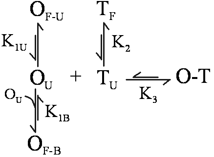
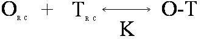
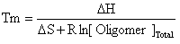

RNAstructure GUI Help |
||
|
This module provides a rapid search interface for picking out an oligonucleotide that binds strongly to its target, according to thermodynamic data. It not only calculates energy required to break target structure, but also structure due to oligonucleotide folding, if any.
Three modes are available; these affect the speed and calculation type of free energy.
While not explicitly a mode, the option "Include Target Suboptimal Structures" functions as a sort of fourth mode. This option uses all suboptimal structures in the target CT file to determine the free energy lost in the target. Each structure's free energy loss is weighted according to the free energy of the structure. The OligoWalk results screen contains three main parts. At the top, the current oligo number appears with the thermodynamics (ΔG) for this oligo, in kcal/mol. The oligo number also indicates the 5'-most base in the target that the oligo is designed to bind. The given ΔG's are as follows:
Tm: This is a melt temperature in degrees C for the duplex formation, i.e. the temperature at which half the target strands are bound with oligomer. It neglects structure in the oligo and target and assumes that oligomer concentration is in excess. An overview of this calculation is given below. Below the thermodynamic data are five buttons. These are used to navigate through the rna sequence. Click "<" or ">" to move to the previous or next oligo. Click "<<" or ">>" to move back or forward by ten. Click "Goto..." to enter an oligo number to move to directly. Note that in the "Goto..." dialog box, you can click on "Most Stable" to select the highest affinity oligo and go there directly. The middle part of the screen shows the current oligo (3'->5') bound to the target (5'->3'). Target bases appear red if they are paired in the folded target structure and are black otherwise. Target base numbers are given. At the bottom, some ΔG values are displayed graphically. The default is to show binding ΔG in green and overall ΔG in blue (red for the currently shown oligo). Due to breaking of target and oligo structure, the blue bars are generally smaller than the green bars. Downward bars indicate negative ΔG and upward bars indicate positive ΔG. All bars start at zero energy.
OligoWalk Equilibrium When designing an antisense oligonucleotide (oligomers) that will bind with high affinity, it is desirable to consider the structure of the target RNA strand and the antisense oligomer. Specifically, for an oligomer to bind tightly, it should be complementary to a stretch of target RNA that has little self-structure. Also, the oligomer should have little self-structure, either intramolecular or bimolecular. Breaking up any self-structure amounts to a binding penalty. OligoWalk considers the following equilibrium: In this reaction, O is the oligomer, T is the target, O-T is the oligomer-target complex. OF is self-structured oligomer either unimolecular (U) or bimolecular (B) and TF is self-structured target (unimolecular). Bimolecular target-target interactions are neglected because the concentration of target is low. OU is unfolded oligomer and TU is unfolded target in the region of oligomer complementarity. These structures are in equilibrium with each other, with equilibrium constants K1U, K1B, K2, and K3. The Tm Calculation in OligoWalk OligoWalk calculates a melt temperature for the duplex formation of antisense-target binding. This calculation neglects target structure and antisense oligonucleotide structure. Consider the equilibrium of: where the random coil oligomer binds to random coil target with an equilibrium constant K. If we assume that: [OR.C.] >> [TR.C.] then the Tm will be the temperature at which half the target is bound or: [TR.C.] = [O-T] = [Target]Total/2 Knowing that: ΔG = ΔH - TΔS and ΔG = -RT ln(K) Then: where R is the gas constant and Tm is in K. OligoWalk converts Tm to degrees C. |
||
|
Visit The Mathews Lab RNAstructure Page for updates and latest information. |
||